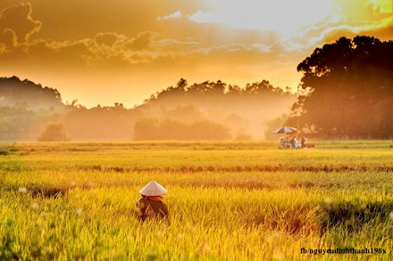
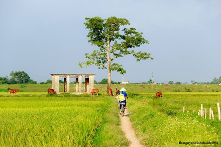
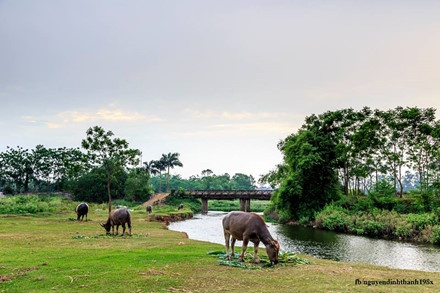

Một em bé ở Tây Ninh theo bà ra đồng cắt cỏ về. Hình ảnh con trâu, con bò, rặng tre gắn liền với tuổi thơ của mỗi người, đặc biệt là những người "sinh ra từ làng". Những tháng ngày thơ bé được theo bà rong ruổi trên cánh đồng.
Bức họa đồng quê

Một mùa vàng bội thu, báo hiệu một năm ấm no của bà con dân tộc ở Hoàng Su Phì (Hà Giang). Dưới bàn tay tài hoa của người nông dân cần mẫn, đồng lúa đã trở thành kiệt tác nghệ thuật giữa đất trời mỗi độ thu về.

Cha và con trai ở vùng quê Ninh Thuận trở về sau một ngày làm đồng mệt mỏi. Hình ảnh chú bé ngồi trên lưng trâu quá đỗi thân thuộc với chốn làng quê, đặc trưng cho văn hóa dân gian Việt Nam. Ảnh: Công Nghĩa Photo.
Một phụ nữ ở Thạch Thất (Hà Nội) quẩy mạ ra đồng. Hình ảnh những người bà, người mẹ tần tảo sớm hôm, một nắng hai sương, chăm lo sản xuất nông nghiệp, khơi gợi nhiều cảm xúc, giản dị mà đầy thân thương. Ảnh: Ngọc Vũ.

Dòng sông và làn khói tạo nên một vũ điệu trên cánh đồng lúa xanh mướt ở Bắc Sơn (Lạng Sơn). Hãy một lần đón bình minh và vẫy tay chào hoàng hôn trên những miền quê thanh bình để thấy đất nước đẹp đến nhường nào